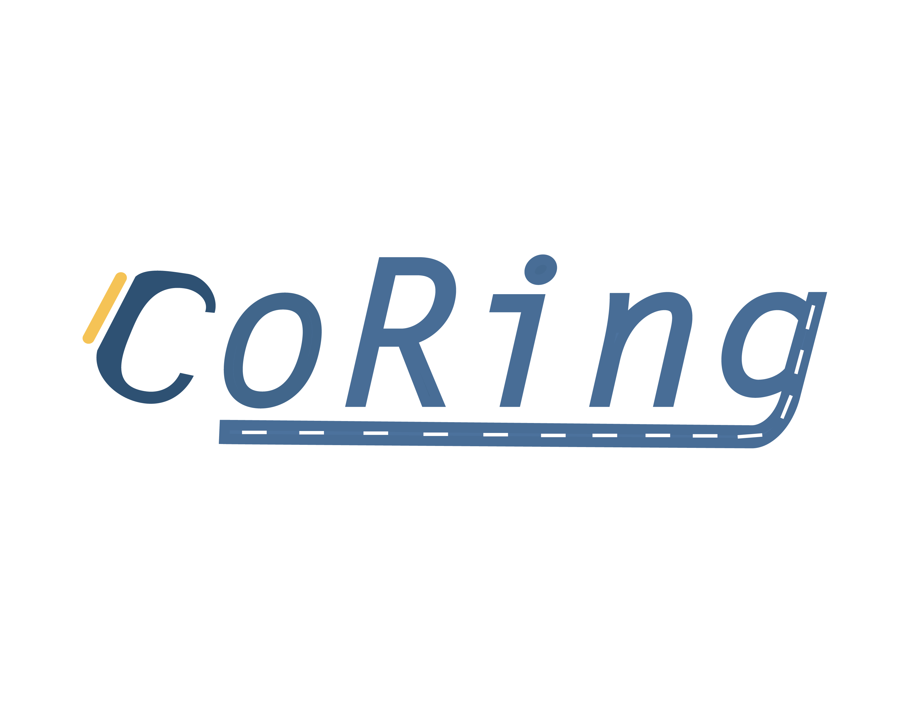

CoRing
團體出遊跟車裝置
角色:
專案簡介
跟車，是一群人出遊時常見的行為模式，溝通常因環境與裝置的限制而擾亂了興致，coRing透過一個簡潔且攜便性高的設計解決團體出遊時中遭遇到的前後車溝通問題，一個簡單的環扣住彼此不同的風景，鏈住一趟緊密而美好的回憶。
團體出遊跟車裝置
角色:
跟車，是一群人出遊時常見的行為模式，溝通常因環境與裝置的限制而擾亂了興致，coRing透過一個簡潔且攜便性高的設計解決團體出遊時中遭遇到的前後車溝通問題，一個簡單的環扣住彼此不同的風景，鏈住一趟緊密而美好的回憶。